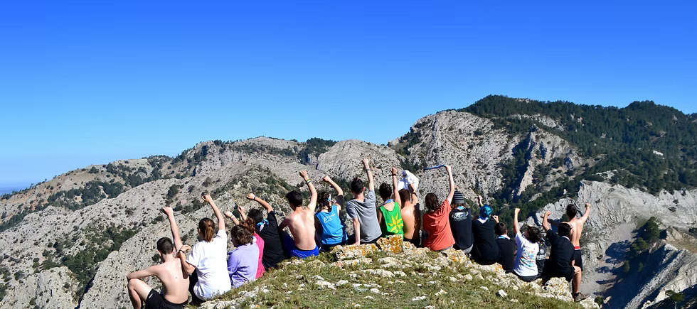

QUÈ ÉS EL CAU?
El cau és un espai de reunió, de retrobament i d'aprenentatge. Un espai de llibertat, d'expressió i d'iniciatives on el nostre escoltisme es viu quotidianament. És una espai de construcció personal des del col·lectiu i pel col·lectiu. Implicats a la nostre ciutat i al país, apostem, des del moviment escolta, per la transformació social. Infants i joves ens reunim els caps de setmana per fer activitats o excursions, i vivim grans experiències de colònies i als campaments.
Mar 03, 2017
LLIURE
Els nostres pedagogs han preparat una serie de
dinàmiques per els altres caps per millorar
pedagogicament al cau!!!
Mar 17, 2017
CAP DE SETMANA CAU
Prepareu les motxilles i les ganes de pasar-s'ho
bé que ens ananem tots junts de cap de setmana!!
Apr 07, 2017
COLÒNIES PRIMAVERA
Aquest any, per una banda, les unitats més petites
(Estol i Llops) se'n van juntes, i per l'altre les
més grans (Raiers i Secció) també!!